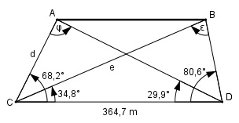

Aufgabe 184 Die Punkte A und B sind unzugänglich. Um ihre Entfernung zu bestimmen, hat ein Vermesser eine Standlinie CD von 364,7 m Länge abgesteckt und folgende Winkel gemessen ∡ BCD = 34,8°, ACD = 68,2°, ADC = 29,9° und BDC = 80,6°. Berechnen Sie AB.

ε = 180° - 34,8° - 80,6° = 64,6° Im Dreieck CDB: Fall SWW: Sinussatz: 364,7 m e ----------- = ----------- | *sin 80,6° sin 64,6° sin 80,6° 364,7 m * sin 80,6° e = --------------------- = sin 64,6° 364,7 m * 0,9866 = ------------------- = 398,3 m 0,9033 φ = 180° - 29,9° - 68,2° = 81,9° Im Dreieck ACD: Fall SWW: Sinussatz: 364,7 m d ----------- = ----------- |*sin 29,9° sin 81,9° sin 29,9° 364,7 m * sin 29,9° d = --------------------- = sin 81,9° 364,7 m * 0,4985 = ------------------- = 183,6 m 0,99 Im Dreieck ACB: Fall SWS: Cosinussatz: AB² = d² + e² - 2 * d * e * cos (68,2° - 34,8°) AB² = 183,6² + 398,3² - 2*183,6*398,3 * cos 33,4° AB² = 183,6² + 398,3² - 2*183,6*398,3 * 0,8348 = = 70 257,5 |√ AB = 265 m